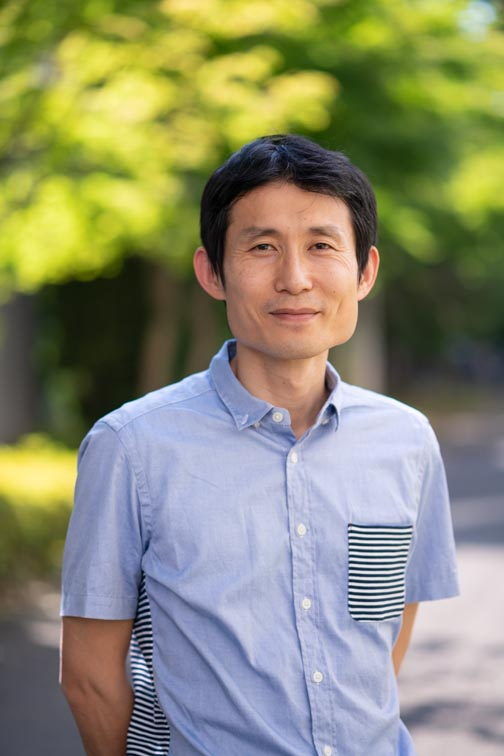

日本語ページ
English page
氏名・所属

成蹊大学
理工学部理工学科
教授
E-mail: komori(at)st.seikei.ac.jp
統計数理研究所
統計思考院
客員教授
経歴
- 2005年3月
- 2007年3月
- 2010年3月
- 2010年4月～2015年9月
- 2015年10月～2018年3月
- 2018年4月～2024年3月
- 2024年4月～
研究分野
機械学習，医療統計，生物統計，情報幾何学，データサイエンス
研究室の特徴
データには必ず不確実性が伴います．その不確実性を確率論の枠組みで定式化し，
データの背後にある本質を捉えることを目指しています． そのために統計科学，機械学習，
情報理論，情報幾何学の考え方や手法を駆使します． またデータの本質を捉えるためにはデータを効率的に扱う能力も必須です．
本研究室ではそのために主に統計解析ソフトRを用います.
Rを通してデータの概要を正しくかつ客観的に把握することがデータ解析の第一歩となります．
自分のアイディアを数式で論理的に展開し，それをプログラムを用いて実装し，実際に社会に役に立つ形にまで持っていくことを目指します．
プログラミングが好きな学生，論理的思考が得意な学生，データ解析に興味がある学生を歓迎致します．
参考図書
- データ分析とデータサイエンス，柴田里程，近代科学社
- Sによるデータ解析，渋谷政昭，柴田里程，共立出版
- Sと統計モデル，John M. Chambers and Trevor J. Hastie (柴田里程 訳)，共立出版
- 現代数理統計学，竹村彰通，創文社
- The Elements of Statistical Learning--Data Mining, Inference, and Prediction, Trevor Hastie, Robert Tibshirani and Jerome Friedman, Springer
記事
- 統数研ニュース131号
- 日本計量生物学会会報第119号
研究紹介ポスター
- 研究紹介１
むさしのサイエンスフェスタ
- 解説書
- 生き物データ+描画プログラム
論文
- Komori, O. and Eguchi, S. (2010). A Boosting Method for Maximizing the Partial Area under the ROC Curve. BMC Bioinformatics 11, 314. online
- Komori, O. (2011). A Boosting Method for Maximization of the Area under the ROC Curve. Annals of the Institute of Statistical Mathematics 63, 961-979.
- Komori, O. and Eguchi, S. (2011).Boosting learning algorithm for pattern recognition and beyond. IEICE Transactions on Information and Systems E94-D,1863-1869.
- Eguchi, S., Komori, O. and Kato, S. (2011). Projective power entropy and maximum Tsallis entropy distributions. Entropy 13, 1746-1764 online.
- Takenouchi, T., Komori, O. and Eguchi, S. (2012).An extension of the Receiver Operating Characteristic curve and AUC-optimal classification. Neural Computation 24, 2789-2824.
- Chen, P., Hung, H., Komori, O., Huang, S., Eguchi, S. (2013). Robust Independent Component Analysis via Minimum γ-Divergence Estimation. Selected Topics in Signal Processing, IEEE Journal 7, 614-624.
- Komori, O., Pritchard, M., Eguchi, S. (2013). Multiple suboptimal solutions for prediction rules in gene expression data. Computational and Mathematical Methods in Medicine 2013, 14.
- Notsu, A., Komori, O., Eguchi, S. (2014). Spontaneous Clustering via Minimum Gamma-divergence. Neural Computation 26, 421-448.
- Kanao, K., Komori, O., Nakashima, J., Ohigashi, T., Kikuchi, E., Miyajima, A., Nakagawa, K., Eguchi, S. and Oya, M. (2014). Individualized prostate-specific antigen threshold values to avoid overdiagnosis of prostate cancer and reduce unnecessary biopsy in elderly men. Japanese Journal of Clinical Oncology 44, 852-859.
- Eguchi, S., Komori, O. and Ohara, A. (2014). Duality of maximum entropy and minimum divergence. Entropy 16, 3552-3572
- Komori, O., Eguchi, S. and Copas, J. B. (2015). Generalized t-statistics for two-group classification. Biometrics 71, 404-416.
- Takenouchi, T, Komori, O. and Eguchi, S (2015). Binary classification with a pseudo exponential model and its application for multi-task learning. Entropy 17, 5673-5694
- Komori, O., Eguchi, S., Ikeda, S., Okamura, H., Ichinokawa, M. and Nakayama, S. (2015). An asymmetric logistic regression model for ecological data. Methods in Ecology and Evolution 7, 249-260
- Hamada, R., Nakashima, M., Ohori, Y., Komori, O., Yoshioka, K. and Tachibana, M. (2015). Preoperative predictive factors and further risk stratification of biochemical recurrence in clinically localized high-risk prostate cancer. International Journal of Clinical Oncology 21, 595-600
- Tsujimoto, M., Komori, O. and Imura, S. (2016). Effect of lifespan and age on reproductive performance of the tardigrade Acutuncus antarcticus: minimal reproductive senescence Hydrobiologia 772, 93-102
- Okuma, H., Koizumi, F., Hirakawa, A., Nakatochi, M., Komori, O., Hashimoto, J., Kodaira, M., Yunokawa, M., Yamamoto, H.,Yonemori, K., Shimizu, C., Fujiwara, Y. and Tamura, K. (2016). Clinical and microarray analysis of breast cancers of all subtypes from two prospective preoperative chemotherapy studies British Journal of Cancer 115, 411-419
- Omae, K., Komori, O. and Eguchi, S. (2016). Reproducible detection of disease-associated markers from gene expression data. BMC Medical Genomics 9, 53
- Omae, K., Komori, O. and Eguchi, S. (2017). Quasi-linear score for capturing heterogeneous structure in biomarkers. BMC Bioinformatics 18, 308
- Komori, O., Eguchi, S., Saigusa, Y., Okamura, S. and Ichinokawa, M. (2017). Robust bias correction model for estimation of global trend in marine populations. Ecosphere 8, 1-9
- Baek, S., Komori, O. Ma, Y. (2018). An optimal semiparametric method for two-group classification. Scandinavian Journal of Statistics 45, 806-846
- Sakai, Y., Honda, M., Matsui, S., Komori, O., Murayama, T., Fujiwara, T., Mizuno, M., Imai, Y., Yoshimura, K., Nasti, A., Wada, T., Iida, N., Kitahara, M., Horii, R., Tamai, T., Nishikawa, M., Okafuji, H., Mizukoshi, E., Yamashita, T., Yamashita, T., Arai, K., Kitamura, K., Kawaguchi, K., Takatori, H., Shimakami, T., Terashima, T., Hayashi, T., Nio, K., Kaneko, S. (2019) Development of novel diagnostic system for pancreas cancer including early stages measuring mRNA of whole blood cells. Cancer Science，110, 1364-1388
- Ashad. M.A., Komori, O. Deng, H., Calhoun, V., Wang, Y. (2019) Robust kernel canonical correlation analysis to detect gene-gene co-associations: A case study in genetics, Journal of Bioinformatics and Computational Biology, 17 1-28
- Hashimoto, T., Nakashima, J., Inoue, R., Komori, O., Yamaguchi, Y., Kashima, T., Satake, N., Nakagami, Y., Namiki, K., Nagao, T. and Ohno, Y. (2020) The significance of micro lymphatic invasion and pathological Gleason score in prostate cancer patients with pathologically organ-confined disease and negative surgical margins after robot-assisted radical prostatectomy, International Journal of Clinical Oncology, 25, 377-383
- Komori, O., Eguchi, S., Saigusa, Y., Kusumoto, B. and Kubota, Y. (2020) Sampling bias correction in species distribution models by quasi-linear Poisson point process, Ecological Informatics, 55, 1-11
- Komori, O. and Eguchi, S. (2021) A unified formulation of k-means, fuzzy c-means and Gaussian mixture model by the Kolmogorov-Nagumo average, Entropy, 23, 518
- Hashimoto, T., Komori, O., Nakashima, J., Kashima, T., Yamaguchi, Y. Satake, N., Nakagami, Y., Shishido, T. Namiki, K. and Ohno, Y. (2022) Prostate-specific antigen nomogram to predict advanced prostate cancer using area under the receiver operating characteristic curve boosting, Urologic oncology, 40, 162.e9-162.e16
- Saigusa, Y., Eguchi, S. and Komori, O. (2022) Generalized quasi-linear mixed-effects model, Statistical Methods in Medical Research, 31,1280-1291
- Higashino, Y., Isozaki, M., Tsunetoshi, K., Komori, O., Shibaike, Y. Kawajiri, S., Yamada, S., Akazawa, A., Kidoguchi, M., Kodera, T. Arishima, H., Inoue,T., Fukushima, T. and Kikuta, K.(2022) Factors affecting global neurocognitive status and frontal executive functions in the early stage after surgical clipping of unruptured anterior circulation aneurysms with respect to keyhole clipping and conventional clipping, Acta Neurochirurgica, 164, 2219-2228
- Onishi, T., Komori, O., Ando, T., Fukutomi, M., Tobaru, M. (2023) Effectiveness of high implantation of Sapien 3 in preventing pacemaker implantation: a propensity score analysis archives of cardiovascular diseases, Archives of Cardiovascular Diseases, 116, 78-87
- Kawajiri, S., Isozaki, M., Komori, O., Yamada, S., Higashino, Y., Yamauchi, T., Akazawa, A., Kidoguchi, M., Yomo, M. M.D., Kodera, T., M.D., Arishima, H., Awara, S., Inatani, M., Kikuta, K. (2023) Visual Evoked Potential Can Predict Deterioration of Visual Function after Direct Clipping of Paraclinoid Aneurysm with Anterior Clinoidectomy, Neurosurgery, 92, 1276-1286
- Tutmez, B. and Komori, O. (2023) Regularization learning of trace element contamination stemmed from tailings dam-break, Pollution, 9, 1082-1097
- Komori, O., Saigusa, Y. and Eguchi, S. (2023) Statistical learning for species distribution models in ecological studies, Japanese Journal of Statistics and Data Science, accepted
- Tsunetoshi, C., Tsunetoshi, K., Komori, O., Higashino, Y., Isozaki, M., Arai, Y., Kodera, T., Arishima, H., Matsuda, K., Yamaguchi, T., Hasegawa, M. and Kikuta, K. (2023) Factors affecting the duration of continuous electrocardiographic monitoring to detect atrial fibrillation in acute ischemic stroke, Journal of Stroke and Cerebrovascular Diseases
- Kidoguchi, M., Akazawa, A. Komori, O., Isozaki, M., Higashino, Y., Kawajiri, S., Yamada, S., Kodera, T., Arishima, H., Tsujikawa, T., Kimura, H., Kikuta, K.(2023) Prediction of occurrence of cerebral infarction after successful mechanical thrombectomy for ischemic stroke in the anterior circulation by arterial spin labeling, Clinical Neuroradiology, accepted
- 久保田 康裕, 楠本 聞太郎, 塩野 貴之, 五十里 翔吾, 深谷 肇一, 高科 直, 吉川 友也, 重藤 優太郎, 新保 仁, 竹内 彰一, 三枝 祐輔, 小森 理 (2023) 生物多様性ビッグデータに基づいたネイチャーの可視化：その現状と展望，計量生物学，43, 145-188 .
総説・会議録
- Robust hierarchical clustering for gene expression data analysis (2009). Md. Nurul Haque Mollah, Mari Pritchard, Osamu Komori and Shinto Eguchi. Communications of SIWN 6, 118-122.
- ゲノム・プロテオミクスデータを用いた予測解析: 機械学習による新しい統計的手法(2011). 小森理・江口真透．計量生物学 32, 49-73.
受賞
発表
- 2023年9月6日 統計関連学会連合大会 (京都大学)
Geometric-mean divergence に基づく生物多様性予測 小森理，三枝祐輔，江口真透.
- 2022年7月28日 久留米大学バイオセンターセミナー (久留米大学)
統計的機械学習法と
データの異質性に注目した解析法 小森理
- 2021年7月7日 統計数理研究所水曜セミナー (統計数理研究所)
A unified formulation of k-means, fuzzy c-means and Gaussian mixture model by the Kolmogorov-Nagumo average 小森理
- 2019年9月10日 統計関連学会連合大会 (滋賀大学)
G-computation に関するoverview 小森理，江口真透.
- 2018年12月27日 電気学会C 部門制御技術委員会 (統計数理研究所)
統計的機械学習法と
データの異質性に注目した解析法 小森理
- 2018年9月12日 統計関連学会連合大会 (中央大学)
一般化エネルギー関数に基づくクラスター分析 小森理，江口真透.
- 2017年9月7日 統計関連学会連合大会 (南山大学)
生態デ－タのためのポアソン点過程モデル-準線形モデリング- 小森理，江口真透.
- 2017年3月27日 第８回生物統計ネットワークシンポジウム (アクロス福岡大会議室)
分布の異質性を考慮したゲノムデータ判別解析 小森理
- 2017年3月6日 CFAS 2017: International Conference on Fisheries and Aquatic Sciences, (Patong Beach Hotel, Thailand)
Robustified asymmetric logistic regression model for global fish stock assessment. Osamu Komori.
- 2017年1月22日 The International Conference on Bioinformatics and Biostatistics for Agriculture Health and Environment, (Rajshahi University, Bangladesh)
Asymmetric logistic regression model. Osamu Komori and Shinto Eguchi.
- 2016年11月18日 大規模複雑データの理論と方法論の総合的研究 (久留米大学)
非対称ロジスティックモデルによる水産資源評価. 小森理，江口真透.
- 2016年9月5日 統計関連学会連合大会 (金沢大学)
二重頑健性を持った非対称ロジスティックモデルによる水産資源評価. 小森理，江口真透.
- 2016年6月13日 Information Geometry and its Applications IV, (Liblice Castle Hotel, Czech Republic)
A simple mixture model for probability density estimation based on a quasi divergence (poster). Osamu Komori and Shinto Eguchi.
- 2016年6月13日 Information Geometry and its Applications IV, (Liblice Castle Hotel, Czech Republic)
Information geometry associated with two generalized means. Shinto Eguchi, Osamu Komori and Atsumi Ohara.
- 2015年12月19日 IASC-ARS 2015, (National University of Singapore, Singapore)
Extension of AUC for classification considering heterogeneity in distributions. Osamu Komori and Shinto Eguchi.
- 2015年12月11日 2015 Workshop on High-Dimensional Statistical Analysis, (Sinica, Taiwan)
Generalized t-statistic and AUC for binary classification. Osamu Komori and Shinto Eguchi.
- 2015年9月7日 統計関連学会連合大会 (岡山大学)
分布の異質性を考慮したt統計量とAUCの一般化. 小森理，江口真透.
- 2014年10月17日 東京大学大気海洋研究所共同利用研究集会 (東京大学)
非対称ロジスティックモデルによる世界漁業の評価. 小森理，江口真透.
- 2014年9月23日 34th International Workshop on Bayesian Inference and Maximum Entropy Methods in Science and Engineering (Amboise, France)
Maximum power entropy method for ecological data analysis. Osamu Komori and Shinto Eguchi.
- 2014年9月15日 統計関連学会連合大会 (東京大学)
非対称ロジスティック回帰モデルによる 水産資源評価. 小森理，江口真透．
- 2014年6月30日 The 3rd Institute of Mathematical Statistics Asia Pacific Rim Meeting (Howard International House, Taipei)
Assessment of fishery status based on mis-label model. Osamu Komori and Shinto Eguchi.
- 2014年3月5日 Innovation and Challenges for Fisheries Assessment and Management (Keio University)
Boost learning for evaluation of fishery stock status. Osamu Komori and Shinto Eguchi.
- 2014年3月2日 日本分類学会第32回大会(首都大学東京)
状態空間表現を用いた文章解析. 馬場康維、小森理.
- 2013年12月20日 The Ninth ICSA International Conference:
Challenges of Statistical Methods for Interdisciplinary Research and Big Data (Hong Kong Baptist University)
Assessment of Fishery Status Based on a Boosting Method. Osamu Komori and Shinto Eguchi.
- 2013年12月6日 東北大学東北メディカル・メガバンク研究集会 (東北大学)
一般化ｔ統計量の漸近的性質の考察とその実データ解析への応用. Osamu Komori, Shinto Eguchi and John B. Copas.
- 2013年11月9日 科研費シンポジウム「非対称・非線形統計理論と経済・生体科学への応用」 (千葉大学)
海洋生物多様性の評価方法ーー混合効果モデルとブースティングの応用. 小森理.
- 2013年9月10日 統計関連学会連合大会(大阪大学)
関数データを用いたブースティング －海洋生態系データへの応用. 小森理，野津昭文，江口真透．
- 2013年8月23日 Joint Meeting of the IASC Satellite Conference for the 59th ISI WSC andthe 8th Conference of the Asian Regional Section of the IASC (Seoul)
A class of u-statistics combining multiple markers for two-group classification. Osamu Komori, Hung Hung, Pengwen Chen, Su-Yun Huang and Shinto Eguchi.
- 2012年10月15日 Academia Sinica seminar (Taipei)
Maximization of the Generalized
t-Statistics for Two-class Discrimination
Problem. Osamu Komori, Shinto Eguchi and John B. Copas.
- 2012年9月10日 統計関連学会連合大会(北海道大学)
ｔ統計量の一般化と
その判別解析への応用. Osamu Komori, Shinto Eguchi and John B. Copas.
- 2012年8月28日 XXVI the International Biometric Conference (神戸)
Maximization of a Generalized t-Statistic
for Two-Class Discrimination Problem. Osamu Komori, Shinto Eguchi and John B. Copas.
- 2012年7月4日 The 2nd Institute of Mathematical Statistics Asia Pacific Rim Meeting (筑波)
Density estimation based on
U-divergence with volume-mass-one. Osamu Komori, Kanta Naito and Shinto Eguchi.
- 2011年12月20日 Workshop in National Taiwan University (Taiwan)
Maximization of t-statistics based on
semiparametric inference. Osamu Komori, Shinto Eguchi.
- 2011年12月17日 Joint Meeting of The 2011 Taipei International Statistical Symposium and 7th Conference of the Asian Regional Section of the IASC (Sinica)
Projective power entropy based learning for unsupervised data. Shinto Eguchi, Osamu Komori and Akifumi Notsu.
- 2011年12月5日 医療データ解析研究発表会(山形大学)
AUCを最大化するブースティングと
その実データへの応用 小森理，江口真透.
- 2011年9月6日 統計関連学会連合大会(九州大学)
t 統計量をもとにしたLasso とBoosting について 小森理，江口真透.
- 2011年8月20日 Young Statisticians Meeting (Dublin)
Maximization of t-statistics based on one class label. Osamu Komori, Shinto Eguchi.
- 2010年12月7日 25th International Biometric Conference (Brazil)
A Statistical Method for the Partial Area under the ROC Curve. Osamu Komori, Shinto Eguchi.
- 2010年10月23日 統計モデルによる現象の解析，並びにその基礎理論(山形テルサ)
Boosting for Maximization of the Partial Area under the ROC Curve. 小森理，江口真透.
- 2010年9月6日 統計関連学会連合大会(早稲田)
ブースティングによる混合モデルの推定 小森理，内藤貫太，江口真透.
- 2010年5月1日 中華機卒統計学会 (National Dong Hwa University)
A Boosting Method for Maximization of the Area under the ROC Curve and its Application to PSA Data. Osamu Komori, Shinto Eguchi.
- 2010年4月25日 Tutorial Workshop on Learning with Information Divergence Geometry-a short course. (National Taiwan University)
Pattern Recognition from Genome and Omics Data. Osamu Komori, Shinto Eguchi.
- 2009年9月7日 統計関連学会連合大会（同志社大学)
３次自然スプラインに基づくpAUCBoost.小森理，江口真透.
- 2009年6月28日 The 1st Institute of Mathematical Statistics ASIA Pacific Rim Meeting (Seoul)
Maximization of the Partial Area under the ROC Curve Using a Boosting Technique. Osamu Komori, Shinto Eguchi．
- 2009年4月29日 AUA 2009 Anuual Meeting (Chicago)
PSA cut-off nomogram that avoid over-detection of prostate cancer in elderly men. Kent Kanao, Osamu Komori, Jun Nakashima, Takashi Ohigashi, Eiji Kikuchi, Akira Miyajima, Ken Nakagawa，Shinto Eguchi, Mototsugu Oya．
- 2009年4月26日 The Fifth Statistical and Machine Learning Workshop (National Cheng Kung University)
A Boosting Method Focusing on the Partial Area under the ROC Curve. Osamu Komori，Shinto Eguchi．
- 2009年3月26日 生物統計統計学における因果推論に関する手法の改善 (統計数理研究所)
３次自然スプラインを使ったpAUCのブースティング.小森理，江口真透．
- 2008年12月7日 IASC2008 (Yokohama)
A Boosting Method for Maximizing the Partial Area under the ROC Curve. Osamu Komori，Shinto Eguchi．
- 2008年11月20日 科研基盤：高度情報抽出のための統計理論・方法論とその応用（九州大学）
AUCのブースティングとその遺伝子データへの応用.小森理，江口真透．
- 2008年9月8日 統計関連学会連合大会（慶應義塾大学）
一クラスラベルに注目したブースティング.小森理，江口真透．
- 2008年6月6日 Biomarker Group Meeting（University of Alberta）
Flexible Combination of Covariates by Boosting the Area under the ROC Curve. Osamu Komori，Shinto Eguchi．
- 2008年3月26日 生物統計統計学における因果推論に関する手法の改善 (統計数理研究所)
ROCカーブの下側面積最大化のブースティングとそのPSAデータへの応用.小森理，江口真透．
- 2007年12月29日 International Conference on Multiple Decision Theory, Statistical Inference and Applications（Fu Jen Catholic University）
Flexible Combination of Covariates by Boosting the Area under the ROC Curve. Osamu Komori，Shinto Eguchi．
- 2007年9月7日 統計関連学会連合大会（神戸大学）
判別問題におけるROCカーブの下側面積のブースティング.小森理，江口真透．
- 2007年8月6日 統計サマーセミナー（指宿）
判別問題におけるROCカーブの下側面積のブースティング.小森理，江口真透．
海外研修
-
2008年6月1日から7月1日の一ヶ月間，カナダ・エドモント州立アルバータ大学の
安井裕
教授の研究室を訪問．
-
2012年9月23日から10月21日の一ヶ月間，台北のAcademia SinicaのSu-Yun Huang
教授の研究室を訪問．
-
2016年1月30日から2月21日の3週間，オークランド大学のThomas Yee
教授の研究室を訪問．